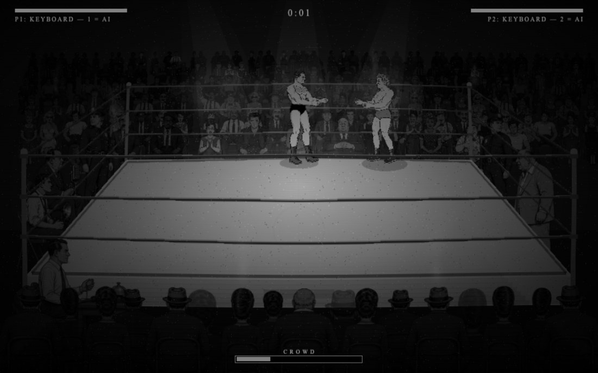
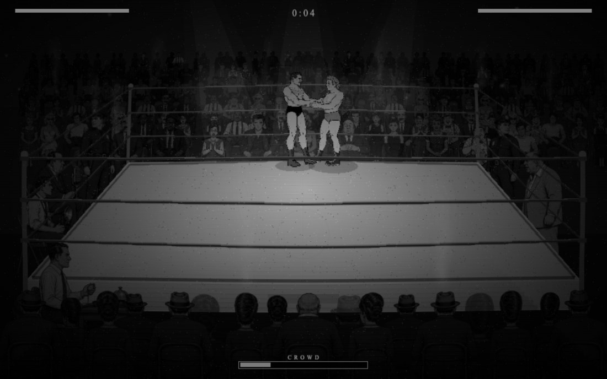
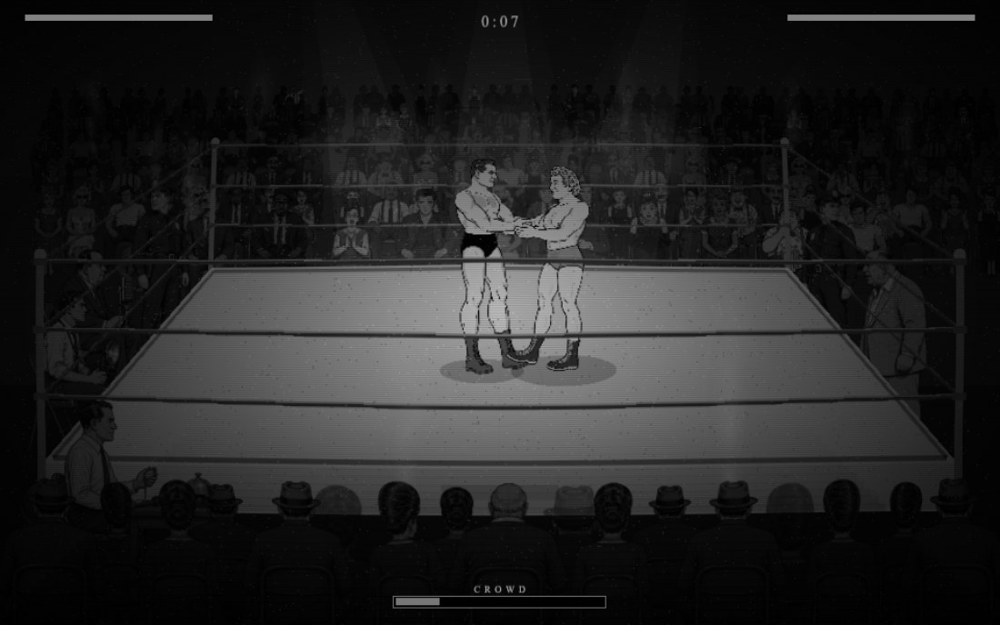
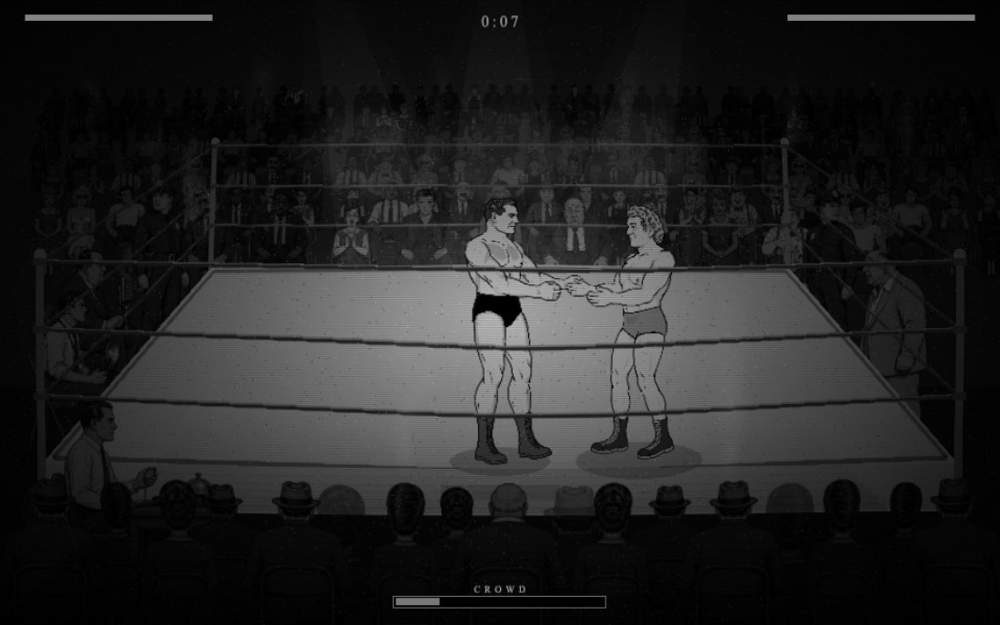
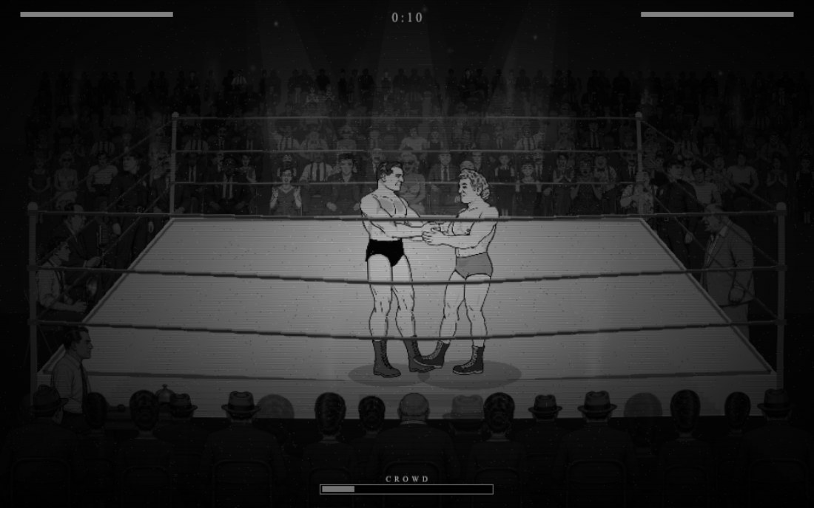

PLAN_SCALE T2.4. Lou (w1) vs George (w2). Each still is the arena as drawn: top rope and posts in frame. Body height is the union of the visible parts' frame bounds (includes transparent padding); post height is interpolated between the far post (120 px above the mat) and the near post (200 px). Marked lines (T2.5): red = the far top rope, yellow = the near top rope, drawn where each crosses a man's painted ink, with its height as % of his ink height from the feet; cyan ticks = his ink top and bottom (pixels with alpha ≥ 128). Numbers are measurements; Derek judges.
flag off · back row (y 266) · idle

83.1%
9.2%
85.1%
8.1%
lou: far top rope crosses at 83.1% of ink height from the feet; near top rope crosses at 9.2% of ink height from the feet (ink 149.2 px, 315.5 per draw scale) george: far top rope crosses at 85.1% of ink height from the feet; near top rope crosses at 8.1% of ink height from the feet (ink 143.5 px, 237.1 per draw scale) lou: draw scale 0.4728, body 151.4 px, post 123.4 px, body/post 1.227 george: draw scale 0.6051, body 151.8 px, post 123.4 px, body/post 1.23
scale=v1 · back row (y 266) · idle
78.9%
8.8%
80.7%
7.7%
lou: far top rope crosses at 78.9% of ink height from the feet; near top rope crosses at 8.8% of ink height from the feet (ink 157.2 px, 315.5 per draw scale) george: far top rope crosses at 80.7% of ink height from the feet; near top rope crosses at 7.7% of ink height from the feet (ink 151.2 px, 237.1 per draw scale) lou: draw scale 0.4983, body 159.6 px, post 123.4 px, body/post 1.293 george: draw scale 0.6377, body 160 px, post 123.4 px, body/post 1.297
flag off · back row (y 266) · wristlockHammerlock, clip frame 150

83.4%
9.3%
86.1%
8.5%
lou: far top rope crosses at 83.4% of ink height from the feet; near top rope crosses at 9.3% of ink height from the feet (ink 148.9 px, 315.0 per draw scale) george: far top rope crosses at 86.1% of ink height from the feet; near top rope crosses at 8.5% of ink height from the feet (ink 142.2 px, 234.9 per draw scale) lou: draw scale 0.4728, body 150.5 px, post 123.4 px, body/post 1.219 george: draw scale 0.6051, body 149.4 px, post 123.4 px, body/post 1.211
lou: far top rope crosses at 79.2% of ink height from the feet; near top rope crosses at 8.9% of ink height from the feet (ink 156.9 px, 315.0 per draw scale) george: far top rope crosses at 81.7% of ink height from the feet; near top rope crosses at 8.1% of ink height from the feet (ink 149.8 px, 234.9 per draw scale) lou: draw scale 0.4983, body 158.6 px, post 123.4 px, body/post 1.285 george: draw scale 0.6377, body 157.5 px, post 123.4 px, body/post 1.276
flag off · middle row (y 352) · idle
50.8%
51.3%
lou: near top rope crosses at 50.8% of ink height from the feet (ink 197.4 px, 315.5 per draw scale) george: near top rope crosses at 51.3% of ink height from the feet (ink 189.8 px, 237.1 per draw scale) lou: draw scale 0.6255, body 200.3 px, post 160.2 px, body/post 1.25 george: draw scale 0.8006, body 200.9 px, post 160.2 px, body/post 1.254
scale=v1 · middle row (y 352) · idle
49.8%
50.2%
lou: near top rope crosses at 49.8% of ink height from the feet (ink 201.5 px, 315.5 per draw scale) george: near top rope crosses at 50.2% of ink height from the feet (ink 193.8 px, 237.1 per draw scale) lou: draw scale 0.6388, body 204.6 px, post 160.2 px, body/post 1.277 george: draw scale 0.8176, body 205.1 px, post 160.2 px, body/post 1.28
flag off · middle row (y 352) · wristlockHammerlock, clip frame 150

51.0%
52.2%
lou: near top rope crosses at 51.0% of ink height from the feet (ink 197.0 px, 315.0 per draw scale) george: near top rope crosses at 52.2% of ink height from the feet (ink 188.1 px, 234.9 per draw scale) lou: draw scale 0.6255, body 199.1 px, post 160.2 px, body/post 1.243 george: draw scale 0.8006, body 197.7 px, post 160.2 px, body/post 1.234
lou: near top rope crosses at 50.0% of ink height from the feet (ink 201.2 px, 315.0 per draw scale) george: near top rope crosses at 51.1% of ink height from the feet (ink 192.1 px, 234.9 per draw scale) lou: draw scale 0.6388, body 203.3 px, post 160.2 px, body/post 1.269 george: draw scale 0.8176, body 201.9 px, post 160.2 px, body/post 1.26
flag off · front row (y 438) · idle

76.1%
77.6%
lou: near top rope crosses at 76.1% of ink height from the feet (ink 245.6 px, 315.5 per draw scale) george: near top rope crosses at 77.6% of ink height from the feet (ink 236.1 px, 237.1 per draw scale) lou: draw scale 0.7783, body 249.2 px, post 197 px, body/post 1.265 george: draw scale 0.9961, body 249.9 px, post 197 px, body/post 1.269
scale=v1 · front row (y 438) · idle
76.0%
77.5%
lou: near top rope crosses at 76.0% of ink height from the feet (ink 245.9 px, 315.5 per draw scale) george: near top rope crosses at 77.5% of ink height from the feet (ink 236.5 px, 237.1 per draw scale) lou: draw scale 0.7793, body 249.6 px, post 197 px, body/post 1.267 george: draw scale 0.9974, body 250.3 px, post 197 px, body/post 1.27
flag off · front row (y 438) · wristlockHammerlock, clip frame 150

76.3%
78.7%
lou: near top rope crosses at 76.3% of ink height from the feet (ink 245.1 px, 315.0 per draw scale) george: near top rope crosses at 78.7% of ink height from the feet (ink 234.0 px, 234.9 per draw scale) lou: draw scale 0.7783, body 247.7 px, post 197 px, body/post 1.257 george: draw scale 0.9961, body 246 px, post 197 px, body/post 1.248
lou: near top rope crosses at 76.2% of ink height from the feet (ink 245.4 px, 315.0 per draw scale) george: near top rope crosses at 78.6% of ink height from the feet (ink 234.3 px, 234.9 per draw scale) lou: draw scale 0.7793, body 248 px, post 197 px, body/post 1.259 george: draw scale 0.9974, body 246.3 px, post 197 px, body/post 1.25
Loop strip (normal speed, both facings)
wristlockHammerlock at the back row, first 150 frames (2.5 s), looping.